-
IBPayments
15:32:22 PM / 27:21:776 Fail
IBPayments
01.14.2025 15:32:22 01.14.2025 16:29:44 27:21:776 · #test-id=2PassExternal Transfer saved IB RecurringPassExternal Transfer saved IB RecurringWhen close all the other opened windows before loading the urlWhen User opens the IB URL Given I login with username "298010" and password "Temenos@123" of IB
Given I login with username "298010" and password "Temenos@123" of IB And click on Go to AccountsAnd click on Transfers and Pay buttonThen click on transfer buttonAnd Enter the details for external transfer saved recurringThen Confirm the external transfer IBAnd Review the external transfer recurring paymentThen logout from IbAnd Login to authorizer account with username "
And click on Go to AccountsAnd click on Transfers and Pay buttonThen click on transfer buttonAnd Enter the details for external transfer saved recurringThen Confirm the external transfer IBAnd Review the external transfer recurring paymentThen logout from IbAnd Login to authorizer account with username ""and password " " And click on Go to AccountsAnd click on Transfers and Pay buttonThen click on Authorization buttonAnd Authorize the External transfer recurring saved Then Review authorization that the details of external transfer recurring is reflected correctly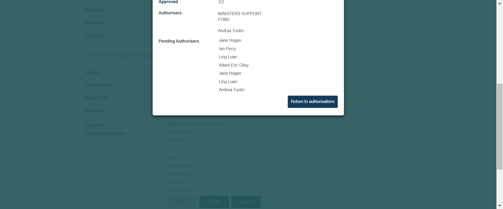PassPerform External Transfer IB new contact futurePassPerform External Transfer IB new contact futureWhen close all the other opened windows before loading the urlWhen User opens the IB URL
Then Review authorization that the details of external transfer recurring is reflected correctly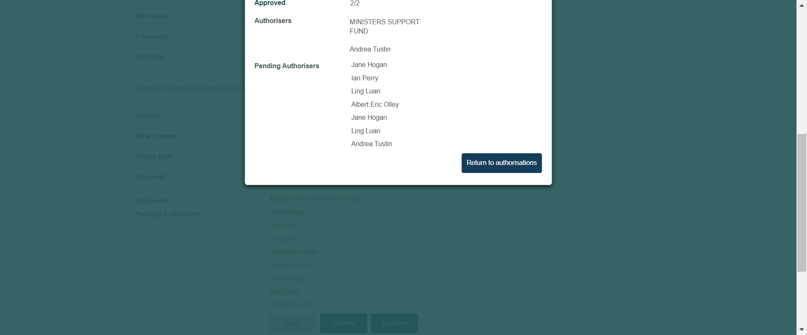PassPerform External Transfer IB new contact futurePassPerform External Transfer IB new contact futureWhen close all the other opened windows before loading the urlWhen User opens the IB URL Given I login with username "298010" and password "Temenos@123" of IB
Given I login with username "298010" and password "Temenos@123" of IB And click on Go to AccountsAnd click on Transfers and Pay buttonThen click on transfer buttonAnd Enter the details for external transfer new contact futureThen Confirm the external transfer IB new Contact futureAnd Review the external transfer new contact future payment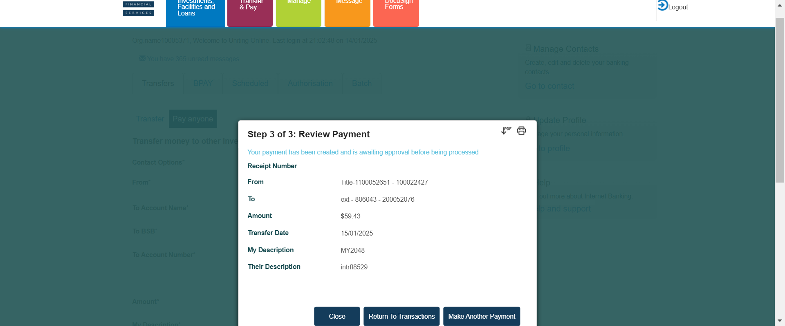Then logout from IbAnd Login to authorizer account with username "
And click on Go to AccountsAnd click on Transfers and Pay buttonThen click on transfer buttonAnd Enter the details for external transfer new contact futureThen Confirm the external transfer IB new Contact futureAnd Review the external transfer new contact future payment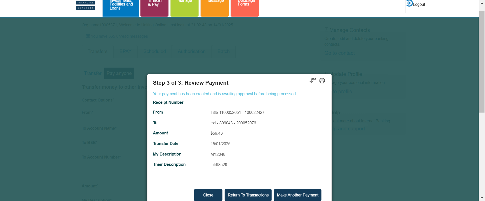Then logout from IbAnd Login to authorizer account with username ""and password " " And click on Go to AccountsAnd click on Transfers and Pay buttonThen click on Authorization buttonAnd Authorize the External transfer new contact future Then Review authorization that the details of external transfer new contact future is reflected correctly
Then Review authorization that the details of external transfer new contact future is reflected correctly FailBpay now saved contactFailBpay now saved contactWhen close all the other opened windows before loading the urlWhen User opens the IB URL
FailBpay now saved contactFailBpay now saved contactWhen close all the other opened windows before loading the urlWhen User opens the IB URL Given I login with username "298010" and password "Temenos@123" of IB
Given I login with username "298010" and password "Temenos@123" of IB And click on Go to AccountsAnd click on Transfers and Pay buttonThen click on transfer buttonThen Click on BpayThen Enter the Bpay detailsAnd confirm Bpay saved paymentAnd Review the BPAY saved contact now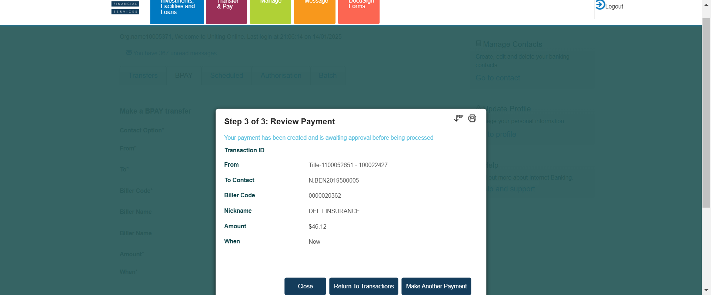Then logout from IbAnd Login to authorizer account with username "
And click on Go to AccountsAnd click on Transfers and Pay buttonThen click on transfer buttonThen Click on BpayThen Enter the Bpay detailsAnd confirm Bpay saved paymentAnd Review the BPAY saved contact now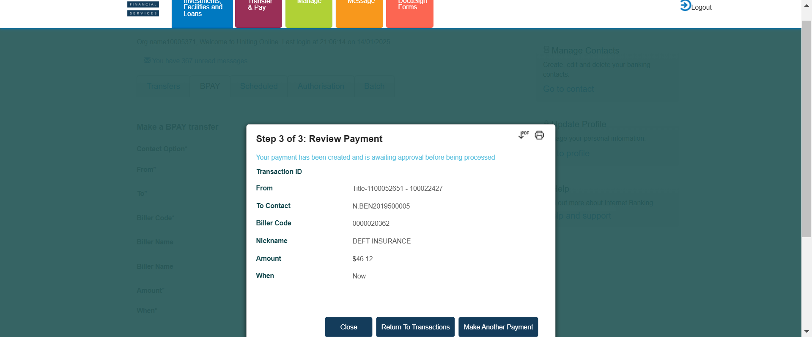Then logout from IbAnd Login to authorizer account with username ""and password " " And click on Go to AccountsAnd click on Transfers and Pay buttonThen click on Authorization buttonThen Authorize the Bpay transfer now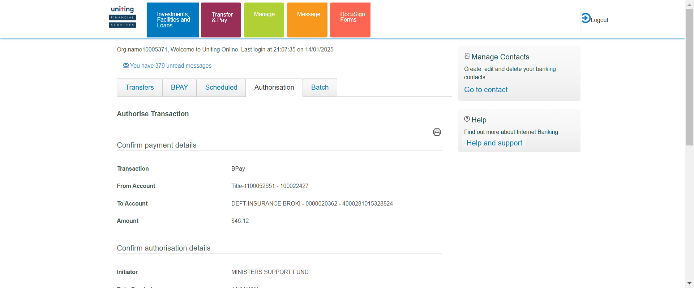Then Review authorization that the details of BPAY saved now is reflected correctly When User opens the T24 Url
When User opens the T24 Url Then User should be able to login to T24
Then User should be able to login to T24


 Then The user should be able to fill the commandlineAnd The user should be able to click on general enquiries buttomAnd click on the IB-view of account entriesThen Enter the account number of Bpay now saved contactcom.frameium.stepdef.Hooks.afterEveryStep(io.cucumber.java.Scenario)
Then The user should be able to fill the commandlineAnd The user should be able to click on general enquiries buttomAnd click on the IB-view of account entriesThen Enter the account number of Bpay now saved contactcom.frameium.stepdef.Hooks.afterEveryStep(io.cucumber.java.Scenario) And click on find buttonStep skippedThen verify the narratives of Bpay now saved contactStep skippedFailBpay future saved contactFailBpay future saved contactWhen close all the other opened windows before loading the urlWhen User opens the IB URL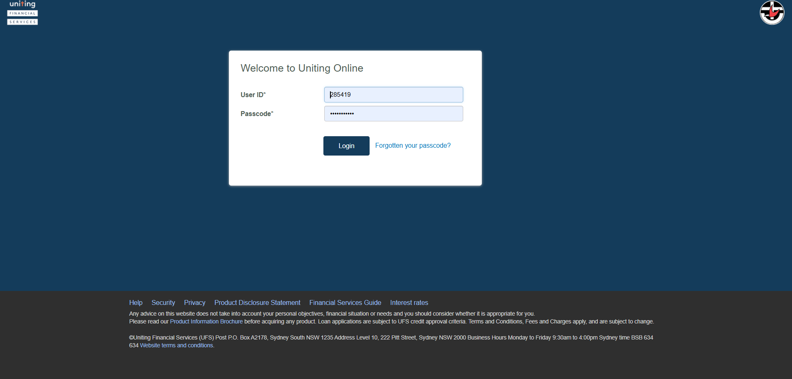Given I login with username "298010" and password "Temenos@123" of IB
And click on find buttonStep skippedThen verify the narratives of Bpay now saved contactStep skippedFailBpay future saved contactFailBpay future saved contactWhen close all the other opened windows before loading the urlWhen User opens the IB URL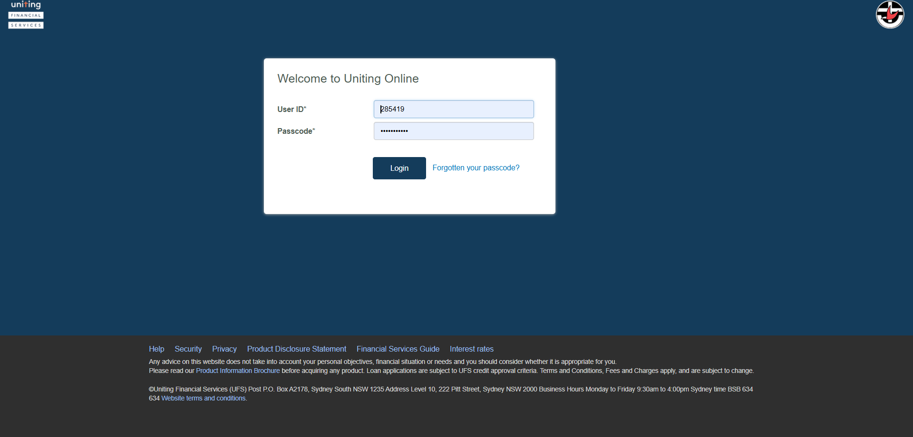Given I login with username "298010" and password "Temenos@123" of IB And click on Go to Accountscom.frameium.stepdef.Hooks.afterEveryStep(io.cucumber.java.Scenario)
And click on Go to Accountscom.frameium.stepdef.Hooks.afterEveryStep(io.cucumber.java.Scenario) And click on Transfers and Pay buttonStep skippedThen click on transfer buttonStep skippedThen Click on BpayStep skippedThen Enter the Bpay future detailsStep skippedAnd confirm Bpay saved payment futureStep skippedAnd Review the BPAY saved contact futureStep skippedThen logout from IbStep skippedAnd Login to authorizer account with username "
And click on Transfers and Pay buttonStep skippedThen click on transfer buttonStep skippedThen Click on BpayStep skippedThen Enter the Bpay future detailsStep skippedAnd confirm Bpay saved payment futureStep skippedAnd Review the BPAY saved contact futureStep skippedThen logout from IbStep skippedAnd Login to authorizer account with username ""and password " " Step skippedAnd click on Go to AccountsStep skippedAnd click on Transfers and Pay buttonStep skippedThen click on Authorization buttonStep skippedThen Authorize the Bpay transfer futureStep skippedThen Review authorization that the details of BPAY future is reflected correctlyStep skippedFailBpay recurrring saved contactFailBpay recurrring saved contactWhen close all the other opened windows before loading the urlWhen User opens the IB URL Given I login with username "298010" and password "Temenos@123" of IB
Given I login with username "298010" and password "Temenos@123" of IB And click on Go to AccountsAnd click on Transfers and Pay buttonThen click on transfer buttonThen Click on BpayThen Enter the Bpay recurring detailsAnd confirm Bpay saved payment recurringAnd Review the BPAY saved contact recurring
And click on Go to AccountsAnd click on Transfers and Pay buttonThen click on transfer buttonThen Click on BpayThen Enter the Bpay recurring detailsAnd confirm Bpay saved payment recurringAnd Review the BPAY saved contact recurring Then logout from IbAnd Login to authorizer account with username "
Then logout from IbAnd Login to authorizer account with username ""and password " " And click on Go to AccountsAnd click on Transfers and Pay buttonThen click on Authorization buttonThen Authorize the Bpay transfer recurring com.frameium.stepdef.Hooks.afterEveryStep(io.cucumber.java.Scenario)
com.frameium.stepdef.Hooks.afterEveryStep(io.cucumber.java.Scenario) Then Review authorization that the details of BPAY saved contact recurring is reflected correctlyStep skippedFailBpay now new contactFailBpay now new contactWhen close all the other opened windows before loading the urlWhen User opens the IB URL
Then Review authorization that the details of BPAY saved contact recurring is reflected correctlyStep skippedFailBpay now new contactFailBpay now new contactWhen close all the other opened windows before loading the urlWhen User opens the IB URL Given I login with username "298010" and password "Temenos@123" of IB
Given I login with username "298010" and password "Temenos@123" of IB And click on Go to AccountsAnd click on Transfers and Pay buttonThen click on transfer buttonThen Click on BpayThen Enter the Bpay new contact detailsAnd confirm Bpay new contact paymentAnd Review the BPAY new contact now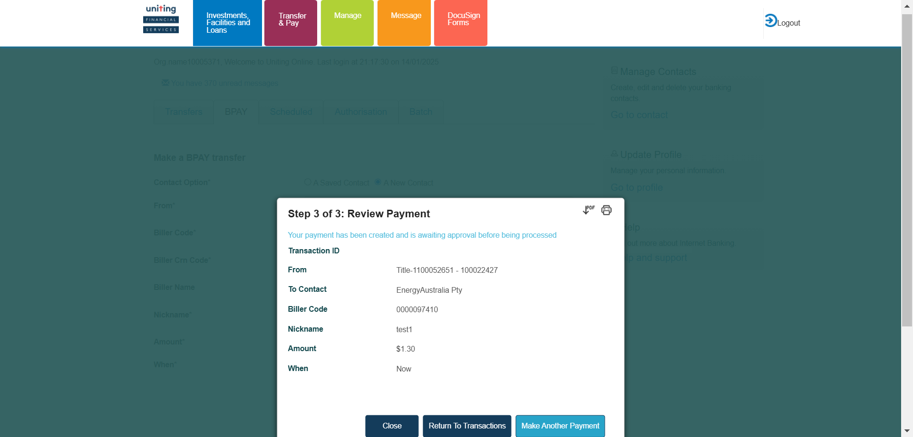Then logout from IbAnd Login to authorizer account with username "
And click on Go to AccountsAnd click on Transfers and Pay buttonThen click on transfer buttonThen Click on BpayThen Enter the Bpay new contact detailsAnd confirm Bpay new contact paymentAnd Review the BPAY new contact now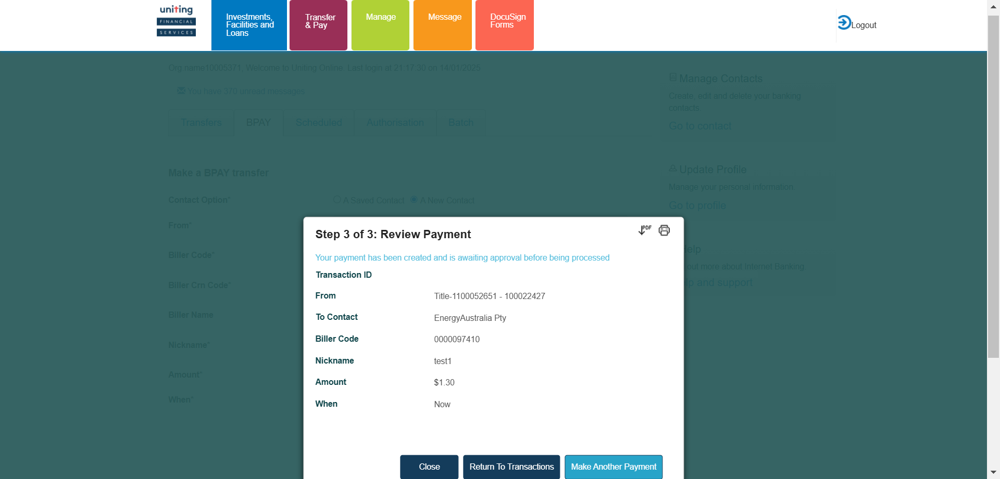Then logout from IbAnd Login to authorizer account with username ""and password " " And click on Go to AccountsAnd click on Transfers and Pay buttonThen click on Authorization buttonThen Authorize the Bpay transfer new contact now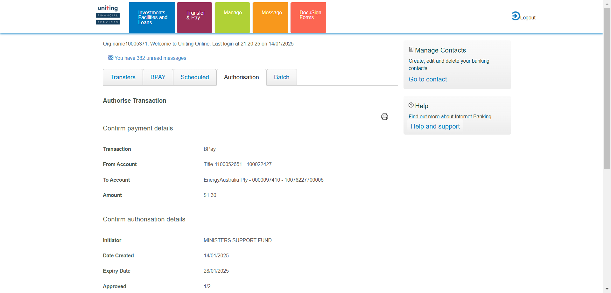com.frameium.stepdef.Hooks.afterEveryStep(io.cucumber.java.Scenario) Then Review authorization that the details of BPAY now is reflected correctlyStep skippedWhen User opens the T24 UrlStep skippedThen User should be able to login to T24Step skippedThen The user should be able to fill the commandlineStep skippedAnd The user should be able to click on general enquiries buttomStep skippedAnd click on the IB-view of account entriesStep skippedThen Enter the account number of Bpay now new contactStep skippedAnd click on find buttonStep skippedThen verify the narratives of Bpay now new contactStep skippedFailBpay recurring new contactFailBpay recurring new contactWhen close all the other opened windows before loading the urlWhen User opens the IB URL
Then Review authorization that the details of BPAY now is reflected correctlyStep skippedWhen User opens the T24 UrlStep skippedThen User should be able to login to T24Step skippedThen The user should be able to fill the commandlineStep skippedAnd The user should be able to click on general enquiries buttomStep skippedAnd click on the IB-view of account entriesStep skippedThen Enter the account number of Bpay now new contactStep skippedAnd click on find buttonStep skippedThen verify the narratives of Bpay now new contactStep skippedFailBpay recurring new contactFailBpay recurring new contactWhen close all the other opened windows before loading the urlWhen User opens the IB URL Given I login with username "298010" and password "Temenos@123" of IB
Given I login with username "298010" and password "Temenos@123" of IB And click on Go to AccountsAnd click on Transfers and Pay buttonThen click on transfer buttonThen Click on BpayThen Enter the Bpay new contact recurring detailsAnd confirm Bpay new contact recurring paymentAnd Review the BPAY new contact recurring
And click on Go to AccountsAnd click on Transfers and Pay buttonThen click on transfer buttonThen Click on BpayThen Enter the Bpay new contact recurring detailsAnd confirm Bpay new contact recurring paymentAnd Review the BPAY new contact recurring com.frameium.stepdef.Hooks.afterEveryStep(io.cucumber.java.Scenario)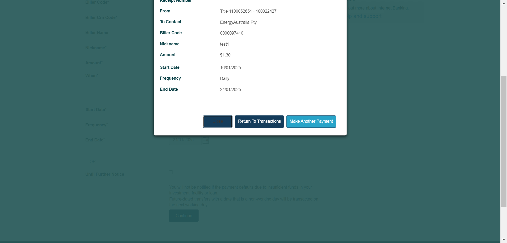Then logout from IbStep skippedAnd Login to authorizer account with username "
com.frameium.stepdef.Hooks.afterEveryStep(io.cucumber.java.Scenario)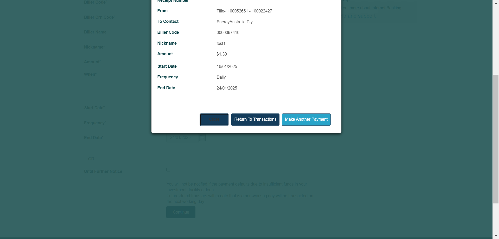Then logout from IbStep skippedAnd Login to authorizer account with username ""and password " " Step skippedAnd click on Go to AccountsStep skippedAnd click on Transfers and Pay buttonStep skippedThen click on Authorization buttonStep skippedThen Authorize the Bpay transfer new contact recurringStep skippedThen Review authorization that the details of BPAY recurring is reflected correctlyStep skippedFailBpay future new contactFailBpay future new contactWhen close all the other opened windows before loading the urlWhen User opens the IB URL Given I login with username "298010" and password "Temenos@123" of IB
Given I login with username "298010" and password "Temenos@123" of IB And click on Go to AccountsAnd click on Transfers and Pay buttonThen click on transfer buttonThen Click on BpayThen Enter the Bpay new contact future detailsAnd confirm Bpay new contact future paymentAnd Review the BPAY new contact futurecom.frameium.stepdef.Hooks.afterEveryStep(io.cucumber.java.Scenario)
And click on Go to AccountsAnd click on Transfers and Pay buttonThen click on transfer buttonThen Click on BpayThen Enter the Bpay new contact future detailsAnd confirm Bpay new contact future paymentAnd Review the BPAY new contact futurecom.frameium.stepdef.Hooks.afterEveryStep(io.cucumber.java.Scenario) Then logout from IbStep skippedAnd Login to authorizer account with username "
Then logout from IbStep skippedAnd Login to authorizer account with username ""and password " " Step skippedAnd click on Go to AccountsStep skippedAnd click on Transfers and Pay buttonStep skippedThen click on Authorization buttonStep skippedThen Authorize the Bpay transfer new contact futureStep skippedThen Review authorization that the details of BPAY future new contact is reflected correctlyStep skippedFailSession history IBFailSession history IBWhen close all the other opened windows before loading the urlWhen User opens the IB URL Given I login with username "298010" and password "Temenos@123" of IB
Given I login with username "298010" and password "Temenos@123" of IB And click on Go to AccountsThen check whether the session history is showing the correct detailscom.frameium.stepdef.Hooks.afterEveryStep(io.cucumber.java.Scenario)
And click on Go to AccountsThen check whether the session history is showing the correct detailscom.frameium.stepdef.Hooks.afterEveryStep(io.cucumber.java.Scenario) FailBatch template-Create/edit/deleteFailBatch template-Create/edit/deleteWhen close all the other opened windows before loading the urlWhen User opens the IB URL
FailBatch template-Create/edit/deleteFailBatch template-Create/edit/deleteWhen close all the other opened windows before loading the urlWhen User opens the IB URL Given I login with username "298010" and password "Temenos@123" of IB
Given I login with username "298010" and password "Temenos@123" of IB And click on Go to AccountsAnd click on Transfers and Pay buttonThen create new batch templatecom.frameium.stepdef.Hooks.afterEveryStep(io.cucumber.java.Scenario)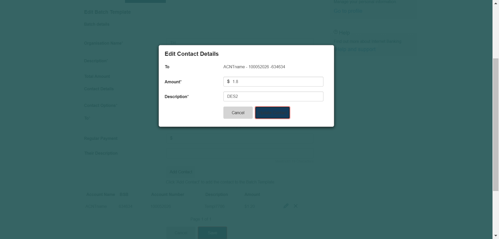Then Delete the newly created batch templateStep skippedFailDebit batch paymentFailDebit batch paymentWhen close all the other opened windows before loading the urlWhen User opens the IB URL
And click on Go to AccountsAnd click on Transfers and Pay buttonThen create new batch templatecom.frameium.stepdef.Hooks.afterEveryStep(io.cucumber.java.Scenario)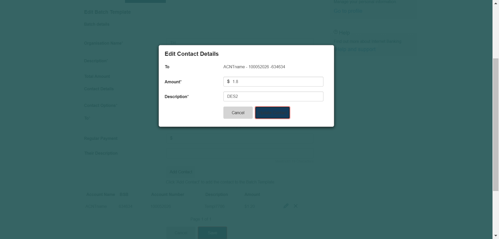Then Delete the newly created batch templateStep skippedFailDebit batch paymentFailDebit batch paymentWhen close all the other opened windows before loading the urlWhen User opens the IB URL Given I login with username "298010" and password "Temenos@123" of IB
Given I login with username "298010" and password "Temenos@123" of IB And click on Go to AccountsAnd click on Transfers and Pay buttonThen Click on BatchAnd Enter the details of Debit batchpaymentcom.frameium.stepdef.Hooks.afterEveryStep(io.cucumber.java.Scenario)
And click on Go to AccountsAnd click on Transfers and Pay buttonThen Click on BatchAnd Enter the details of Debit batchpaymentcom.frameium.stepdef.Hooks.afterEveryStep(io.cucumber.java.Scenario) Then verify the details of debit batch payment and click on Pay now buttonStep skippedThen logout from IbStep skippedAnd Login to authorizer account with username "
Then verify the details of debit batch payment and click on Pay now buttonStep skippedThen logout from IbStep skippedAnd Login to authorizer account with username ""and password " " Step skippedAnd click on Go to AccountsStep skippedAnd click on Transfers and Pay buttonStep skippedThen click on Authorization buttonStep skippedAnd open the debit batch payment that need to be authorisedStep skippedThen authorise the debit batch paymentStep skippedThen review authorization that the details of debit batch paymentStep skippedWhen User opens the T24 UrlStep skippedThen User should be able to login to T24Step skippedThen The user should be able to fill the commandlineStep skippedAnd The user should be able to click on general enquiries buttomStep skippedAnd click on the IB-view of account entriesStep skippedThen Enter the account number of debit batch paymentStep skippedAnd click on find buttonStep skippedAnd verify the narratives of debit batch paymenttStep skippedWhen User opens the IBM URLStep skippedWhen Login to IBMStep skippedThen check the audit log whether the debit batch payment initiated in subIb "298010" scheduled is reflected forStep skippedFailCredit batch payment origiFailCredit batch payment origiWhen close all the other opened windows before loading the urlWhen User opens the IB URL Given I login with username "298010" and password "Temenos@123" of IB
Given I login with username "298010" and password "Temenos@123" of IB And click on Go to AccountsAnd click on Transfers and Pay buttonThen Click on BatchAnd Enter the details of Credit batchpaymentThen verify the details and click on Pay now button creditThen logout from IbAnd Login to authorizer account with username "
And click on Go to AccountsAnd click on Transfers and Pay buttonThen Click on BatchAnd Enter the details of Credit batchpaymentThen verify the details and click on Pay now button creditThen logout from IbAnd Login to authorizer account with username ""and password " " And click on Go to AccountsAnd click on Transfers and Pay buttonThen click on Authorization buttonAnd open the credit batch payment that need to be authorisedThen authorise the credit batch paymentThen review authorization that the details of creditbatchpaymentcom.frameium.stepdef.Hooks.afterEveryStep(io.cucumber.java.Scenario)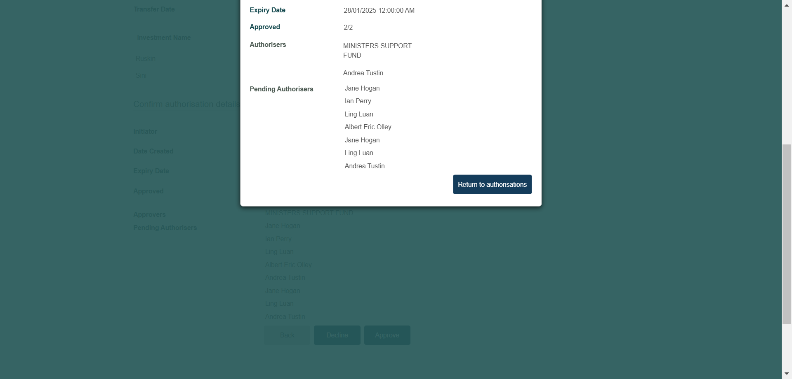Then logout from IbStep skippedWhen User opens the T24 UrlStep skippedThen User should be able to login to T24Step skippedThen The user should be able to fill the commandlineStep skippedAnd The user should be able to click on general enquiries buttomStep skippedAnd click on the IB-view of account entriesStep skippedThen Enter the account number of creditbatchpaymentStep skippedAnd click on find buttonStep skippedThen verify the narratives of creditbatchpaymenttStep skippedWhen User opens the IBM URLStep skippedWhen Login to IBMStep skippedThen check click on Reporting and select all batchesStep skippedThen Verify the IBM reporting that the Batch payment status is postedStep skippedFailDebit batch payment TemplateFailDebit batch payment TemplateWhen close all the other opened windows before loading the urlWhen User opens the IB URL Given I login with username "298010" and password "Temenos@123" of IB
Given I login with username "298010" and password "Temenos@123" of IB And click on Go to AccountsAnd click on Transfers and Pay buttonThen Click on Batchcom.frameium.stepdef.Hooks.afterEveryStep(io.cucumber.java.Scenario)
And click on Go to AccountsAnd click on Transfers and Pay buttonThen Click on Batchcom.frameium.stepdef.Hooks.afterEveryStep(io.cucumber.java.Scenario) And Enter the details of Debit batchpayment templateStep skippedThen verify the details and click on Pay now buttonStep skippedThen logout from IbStep skippedAnd Login to authorizer account with username "
And Enter the details of Debit batchpayment templateStep skippedThen verify the details and click on Pay now buttonStep skippedThen logout from IbStep skippedAnd Login to authorizer account with username ""and password " " Step skippedAnd click on Go to AccountsStep skippedAnd click on Transfers and Pay buttonStep skippedThen click on Authorization buttonStep skippedAnd open the debit batch payment template that need to be authorisedStep skippedThen authorise the debit batch template paymentStep skippedThen review authorization details of debitbatchpayment templateStep skippedThen logout from IbStep skippedWhen User opens the T24 UrlStep skippedThen User should be able to login to T24Step skippedThen The user should be able to fill the commandlineStep skippedAnd The user should be able to click on general enquiries buttomStep skippedAnd click on the IB-view of account entriesStep skippedThen Enter the account number of debit batch payment templateStep skippedAnd click on find buttonStep skippedThen verify the narratives of debit batch payment templateStep skippedFailSingle sign onFailSingle sign onWhen close all the other opened windows before loading the urlWhen User opens the IBM URL When Login to IBMThen retrieve the clientAnd get client numbers having single signonWhen User opens the T24 Url
When Login to IBMThen retrieve the clientAnd get client numbers having single signonWhen User opens the T24 Url Then User should be able to login to T24
Then User should be able to login to T24

 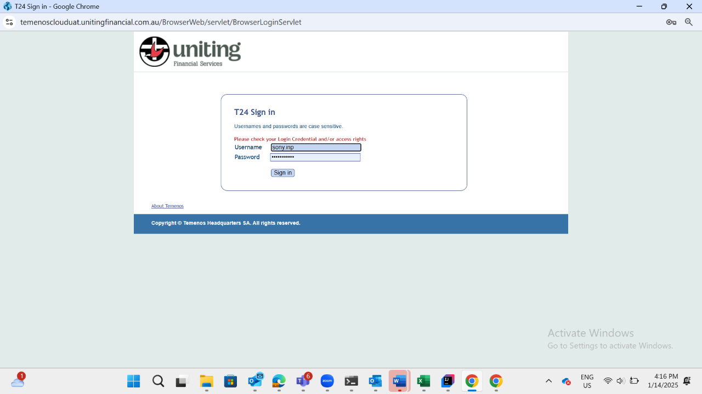Then The user should be able to fill the commandlineThen check the total investment facilities in the customer overview screencom.frameium.stepdef.Ufs.IBPayments.afterStep(io.cucumber.java.Scenario)com.frameium.stepdef.Hooks.afterEveryStep(io.cucumber.java.Scenario)When User opens the IB URLStep skippedGiven I login with username "237675" and password "Temenos@123" of IBStep skippedAnd click on Go to AccountsStep skippedThen check the single sign on dropdwownStep skippedThen select the account from single sign on dropdown and check the investment facilitiesStep skippedFailBatchpaymentfailureFailBatchpaymentfailureWhen close all the other opened windows before loading the urlcom.frameium.stepdef.Ufs.IBPayments.afterStep(io.cucumber.java.Scenario)com.frameium.stepdef.Hooks.afterEveryStep(io.cucumber.java.Scenario)When User opens the IB URLStep skippedGiven I login with username "298010" and password "Temenos@123" of IBStep skippedAnd click on Go to AccountsStep skippedAnd click on Transfers and Pay buttonStep skippedThen Click on BatchStep skippedThen enter the batch payment details and upload the file which will create failed batch paymentStep skippedThen review batch payment and return to authorizationStep skippedThen logout from IbStep skippedAnd Login to authorizer account with username "
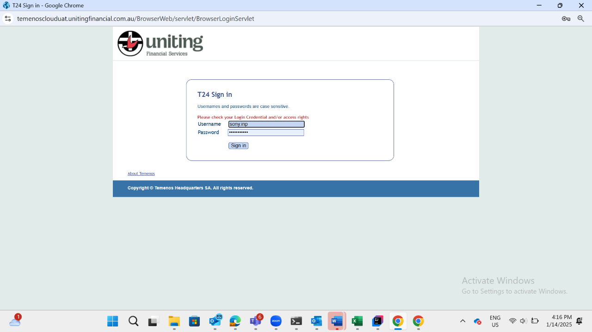Then The user should be able to fill the commandlineThen check the total investment facilities in the customer overview screencom.frameium.stepdef.Ufs.IBPayments.afterStep(io.cucumber.java.Scenario)com.frameium.stepdef.Hooks.afterEveryStep(io.cucumber.java.Scenario)When User opens the IB URLStep skippedGiven I login with username "237675" and password "Temenos@123" of IBStep skippedAnd click on Go to AccountsStep skippedThen check the single sign on dropdwownStep skippedThen select the account from single sign on dropdown and check the investment facilitiesStep skippedFailBatchpaymentfailureFailBatchpaymentfailureWhen close all the other opened windows before loading the urlcom.frameium.stepdef.Ufs.IBPayments.afterStep(io.cucumber.java.Scenario)com.frameium.stepdef.Hooks.afterEveryStep(io.cucumber.java.Scenario)When User opens the IB URLStep skippedGiven I login with username "298010" and password "Temenos@123" of IBStep skippedAnd click on Go to AccountsStep skippedAnd click on Transfers and Pay buttonStep skippedThen Click on BatchStep skippedThen enter the batch payment details and upload the file which will create failed batch paymentStep skippedThen review batch payment and return to authorizationStep skippedThen logout from IbStep skippedAnd Login to authorizer account with username ""and password " " Step skippedAnd click on Go to AccountsStep skippedAnd click on Transfers and Pay buttonStep skippedThen click on Authorization buttonStep skippedAnd open the debit failure batch payment that need to be authorisedStep skippedThen authorise the failure debit batch paymentStep skippedThen review authorization details of debit failure batchpaymentStep skippedThen logout from IbStep skippedWhen User opens the IBM URLStep skippedWhen Login to IBMStep skippedThen check click on ReportingStep skippedThen Verify the IBM reporting that the Batch payment status is not postedStep skippedFailBatchpaymentfailureWhen close all the other opened windows before loading the urlcom.frameium.stepdef.Ufs.IBPayments.afterStep(io.cucumber.java.Scenario)com.frameium.stepdef.Hooks.afterEveryStep(io.cucumber.java.Scenario)When User opens the IB URLStep skippedGiven I login with username "298010" and password "Temenos@123" of IBStep skippedAnd click on Go to AccountsStep skippedAnd click on Transfers and Pay buttonStep skippedThen Click on BatchStep skippedThen Enter the details of batchpayment with Wrong BSBStep skippedThen review batch payment having wrong BSB and return to authorizationStep skippedThen logout from IbStep skippedAnd Login to authorizer account with username ""and password " " Step skippedAnd click on Go to AccountsStep skippedAnd click on Transfers and Pay buttonStep skippedThen click on Authorization buttonStep skippedAnd open the debit Wrong BSB batch payment that need to be authorisedStep skippedThen authorise the wrong BSB batch paymentStep skippedThen review authorization details of wrong BSB batchpaymentStep skippedThen logout from IbStep skippedWhen User opens the IBM URLStep skippedWhen Login to IBMStep skippedThen check the IBManager reporting tableStep skippedThen Logout of IBMStep skippedWhen User opens the IB URLStep skippedGiven I login with username "298010" and password "Temenos@123" of IBStep skippedAnd click on Go to AccountsStep skippedThen check the inbox whether the batch failed due to wrong BSBStep skippedFailJoint account holdersFailJoint account holdersWhen close all the other opened windows before loading the urlcom.frameium.stepdef.Ufs.IBPayments.afterStep(io.cucumber.java.Scenario)com.frameium.stepdef.Hooks.afterEveryStep(io.cucumber.java.Scenario)When User opens the IB URLStep skippedGiven I login with username "124710" and password "Temenos@123" of IBStep skippedAnd click on Go to AccountsStep skippedAnd click on Transfers and Pay buttonStep skippedThen click on transfer buttonStep skippedThen Enter the transaction details in first userStep skippedThen confirm the internal transfer payment for user1Step skippedAnd Review the internal transfer of user1Step skippedWhen Click on inboxStep skippedThen verify whether the transaction details are displayed in the inboxStep skippedThen logout from IbStep skippedGiven I login with username "21894" and password "Temenos@123" of IBStep skippedAnd click on Go to AccountsStep skippedAnd click on Transfers and Pay buttonStep skippedThen click on Authorization buttonStep skippedAnd Authorize the internal transfer initiated by user1Step skippedThen Review authorization that the details of transaction initiated by user1 is reflected correctlyStep skippedAnd click on Transfers and Pay buttonStep skippedThen click on transfer buttonStep skippedThen Enter the transaction details in second userStep skippedThen confirm the internal transfer payment for user2Step skippedAnd Review the internal transfer of user2Step skippedThen logout from IbStep skippedGiven I login with username "124710" and password "Temenos@123" of IBStep skippedAnd click on Go to AccountsStep skippedAnd click on Transfers and Pay buttonStep skippedThen click on transfer buttonStep skippedThen click on Authorization buttonStep skippedAnd Authorize the internal transfer initiated by user2Step skippedThen Review authorization that the details of transaction initiated by user2 is reflected correctlyStep skippedThen logout from IbStep skippedWhen User opens the T24 UrlStep skippedThen User should be able to login to T24Step skippedThen The user should be able to fill the commandlineStep skippedAnd The user should be able to click on general enquiries buttomStep skippedAnd click on the IB-view of account entriesStep skippedThen Enter the account number of user1Step skippedAnd click on find buttonStep skippedThen verify the narratives of debit payment user1Step skippedThen Enter the account number of user2Step skippedAnd click on find buttonStep skippedThen verify the narratives of debit payment user2Step skippedFailchecking Investment facilities are displayedFailchecking Investment facilities are displayedWhen close all the other opened windows before loading the urlcom.frameium.stepdef.Ufs.IBPayments.afterStep(io.cucumber.java.Scenario)com.frameium.stepdef.Hooks.afterEveryStep(io.cucumber.java.Scenario)When User opens the T24 UrlStep skippedThen User should be able to login to T24Step skippedThen The user should be able to fill the commandlineStep skippedThen open a customer and get the investment details of that customerStep skippedWhen User opens the IB URLStep skippedGiven I login with username "3006658" and password "Temenos@123" of IBStep skippedAnd click on Go to AccountsStep skippedThen Verify whether all investment details displayed in the home pageStep skippedFailCredit batch payment TemplateFailCredit batch payment TemplateWhen close all the other opened windows before loading the urlcom.frameium.stepdef.Ufs.IBPayments.afterStep(io.cucumber.java.Scenario)com.frameium.stepdef.Hooks.afterEveryStep(io.cucumber.java.Scenario)When User opens the IB URLStep skippedGiven I login with username "298010" and password "Temenos@123" of IBStep skippedAnd click on Go to AccountsStep skippedAnd click on Transfers and Pay buttonStep skippedThen Click on BatchStep skippedAnd Enter the details of Credit batchpayment templateStep skippedThen verify the details of credit batch payment template and click on Pay now buttonStep skippedThen logout from IbStep skippedAnd Login to authorizer account with username ""and password " " Step skippedAnd click on Go to AccountsStep skippedAnd click on Transfers and Pay buttonStep skippedThen click on Authorization buttonStep skippedAnd open the credit batch payment template that need to be authorisedStep skippedThen authorise the Credit batch template paymentStep skippedThen review authorization details of Creditbatchpayment templateStep skippedThen logout from IbStep skippedWhen User opens the T24 UrlStep skippedThen User should be able to login to T24Step skippedThen The user should be able to fill the commandlineStep skippedAnd The user should be able to click on general enquiries buttomStep skippedAnd click on the IB-view of account entriesStep skippedThen Enter the account number of Credit batch payment templateStep skippedAnd click on find buttonStep skippedThen verify the narratives of Credit batch payment templateStep skipped
-
org.openqa.selenium.ElementClickInterceptedException
1 tests
org.openqa.selenium.ElementClickInterceptedException
1 failedStatus Timestamp TestName Fail 16:03:37 PM Then check whether the session history is showing the correct details IBPayments.Session history IB.Then check whether the session history is showing the correct detailsFail 16:04:43 PM Then create new batch template IBPayments.Batch template-Create/edit/delete.Then create new batch template -
java.lang.UnsupportedOperationException
1 tests
java.lang.UnsupportedOperationException
1 failedStatus Timestamp TestName Fail 16:08:59 PM And Enter the details of Debit batchpayment IBPayments.Debit batch payment.And Enter the details of Debit batchpayment -
java.lang.NullPointerException
1 tests
java.lang.NullPointerException
1 failedStatus Timestamp TestName Fail 15:43:05 PM Then Enter the account number of Bpay now saved contact IBPayments.Bpay now saved contact.Then Enter the account number of Bpay now saved contactFail 15:44:47 PM And click on Go to Accounts IBPayments.Bpay future saved contact.And click on Go to AccountsFail 16:14:43 PM Then Click on Batch IBPayments.Debit batch payment Template.Then Click on Batch -
java.lang.AssertionError
1 tests
java.lang.AssertionError
1 failedStatus Timestamp TestName Fail 15:51:43 PM Then Authorize the Bpay transfer recurring IBPayments.Bpay recurrring saved contact.Then Authorize the Bpay transfer recurringFail 15:57:28 PM Then Authorize the Bpay transfer new contact now IBPayments.Bpay now new contact.Then Authorize the Bpay transfer new contact nowFail 15:59:53 PM And Review the BPAY new contact recurring IBPayments.Bpay recurring new contact.And Review the BPAY new contact recurringFail 16:02:02 PM And Review the BPAY new contact future IBPayments.Bpay future new contact.And Review the BPAY new contact futureFail 16:13:46 PM Then review authorization that the details of creditbatchpayment IBPayments.Credit batch payment origi.Then review authorization that the details of creditbatchpayment -
org.openqa.selenium.WebDriverException
1 tests
org.openqa.selenium.WebDriverException
1 failedStatus Timestamp TestName Fail 16:16:48 PM Then check the total investment facilities in the customer overview screen IBPayments.Single sign on.Then check the total investment facilities in the customer overview screenFail 16:25:40 PM com.frameium.stepdef.Ufs.IBPayments.afterStep(io.cucumber.java.Scenario) IBPayments.Single sign on.com.frameium.stepdef.Ufs.IBPayments.afterStep(io.cucumber.java.Scenario)Fail 16:25:41 PM com.frameium.stepdef.Hooks.afterEveryStep(io.cucumber.java.Scenario) IBPayments.Single sign on.com.frameium.stepdef.Hooks.afterEveryStep(io.cucumber.java.Scenario)Fail 16:28:47 PM When close all the other opened windows before loading the url IBPayments.Batchpaymentfailure.When close all the other opened windows before loading the urlFail 16:28:49 PM com.frameium.stepdef.Ufs.IBPayments.afterStep(io.cucumber.java.Scenario) IBPayments.Batchpaymentfailure.com.frameium.stepdef.Ufs.IBPayments.afterStep(io.cucumber.java.Scenario)Fail 16:28:49 PM com.frameium.stepdef.Hooks.afterEveryStep(io.cucumber.java.Scenario) IBPayments.Batchpaymentfailure.com.frameium.stepdef.Hooks.afterEveryStep(io.cucumber.java.Scenario)Fail 16:29:08 PM When close all the other opened windows before loading the url IBPayments.Batchpaymentfailure.When close all the other opened windows before loading the urlFail 16:29:09 PM com.frameium.stepdef.Ufs.IBPayments.afterStep(io.cucumber.java.Scenario) IBPayments.Batchpaymentfailure.com.frameium.stepdef.Ufs.IBPayments.afterStep(io.cucumber.java.Scenario)Fail 16:29:09 PM com.frameium.stepdef.Hooks.afterEveryStep(io.cucumber.java.Scenario) IBPayments.Batchpaymentfailure.com.frameium.stepdef.Hooks.afterEveryStep(io.cucumber.java.Scenario)Fail 16:29:22 PM When close all the other opened windows before loading the url IBPayments.Joint account holders.When close all the other opened windows before loading the urlFail 16:29:23 PM com.frameium.stepdef.Ufs.IBPayments.afterStep(io.cucumber.java.Scenario) IBPayments.Joint account holders.com.frameium.stepdef.Ufs.IBPayments.afterStep(io.cucumber.java.Scenario)Fail 16:29:23 PM com.frameium.stepdef.Hooks.afterEveryStep(io.cucumber.java.Scenario) IBPayments.Joint account holders.com.frameium.stepdef.Hooks.afterEveryStep(io.cucumber.java.Scenario)Fail 16:29:31 PM When close all the other opened windows before loading the url IBPayments.checking Investment facilities are displayed.When close all the other opened windows before loading the urlFail 16:29:32 PM com.frameium.stepdef.Ufs.IBPayments.afterStep(io.cucumber.java.Scenario) IBPayments.checking Investment facilities are displayed.com.frameium.stepdef.Ufs.IBPayments.afterStep(io.cucumber.java.Scenario)Fail 16:29:32 PM com.frameium.stepdef.Hooks.afterEveryStep(io.cucumber.java.Scenario) IBPayments.checking Investment facilities are displayed.com.frameium.stepdef.Hooks.afterEveryStep(io.cucumber.java.Scenario)Fail 16:29:42 PM When close all the other opened windows before loading the url IBPayments.Credit batch payment Template.When close all the other opened windows before loading the urlFail 16:29:43 PM com.frameium.stepdef.Ufs.IBPayments.afterStep(io.cucumber.java.Scenario) IBPayments.Credit batch payment Template.com.frameium.stepdef.Ufs.IBPayments.afterStep(io.cucumber.java.Scenario)Fail 16:29:43 PM com.frameium.stepdef.Hooks.afterEveryStep(io.cucumber.java.Scenario) IBPayments.Credit batch payment Template.com.frameium.stepdef.Hooks.afterEveryStep(io.cucumber.java.Scenario)
-
@firstday
37 tests
@firstday
4 passed 33 failedStatus Timestamp TestName Pass 15:32:22 PM External Transfer saved IB Recurring IBPayments.External Transfer saved IB RecurringPass 15:32:22 PM External Transfer saved IB Recurring IBPayments.External Transfer saved IB RecurringPass 15:36:04 PM Perform External Transfer IB new contact future IBPayments.Perform External Transfer IB new contact futurePass 15:36:04 PM Perform External Transfer IB new contact future IBPayments.Perform External Transfer IB new contact futureFail 15:39:11 PM Bpay now saved contact IBPayments.Bpay now saved contactFail 15:39:11 PM Bpay now saved contact IBPayments.Bpay now saved contactFail 15:43:21 PM Bpay future saved contact IBPayments.Bpay future saved contactFail 15:43:21 PM Bpay future saved contact IBPayments.Bpay future saved contactFail 15:46:58 PM Bpay recurrring saved contact IBPayments.Bpay recurrring saved contactFail 15:46:58 PM Bpay recurrring saved contact IBPayments.Bpay recurrring saved contactFail 15:52:29 PM Bpay now new contact IBPayments.Bpay now new contactFail 15:52:29 PM Bpay now new contact IBPayments.Bpay now new contactFail 15:58:22 PM Bpay recurring new contact IBPayments.Bpay recurring new contactFail 15:58:22 PM Bpay recurring new contact IBPayments.Bpay recurring new contactFail 16:00:13 PM Bpay future new contact IBPayments.Bpay future new contactFail 16:00:13 PM Bpay future new contact IBPayments.Bpay future new contactFail 16:03:04 PM Session history IB IBPayments.Session history IBFail 16:03:05 PM Session history IB IBPayments.Session history IBFail 16:04:04 PM Batch template-Create/edit/delete IBPayments.Batch template-Create/edit/deleteFail 16:04:04 PM Batch template-Create/edit/delete IBPayments.Batch template-Create/edit/deleteFail 16:07:46 PM Debit batch payment IBPayments.Debit batch paymentFail 16:07:46 PM Debit batch payment IBPayments.Debit batch paymentFail 16:09:50 PM Credit batch payment origi IBPayments.Credit batch payment origiFail 16:09:50 PM Credit batch payment origi IBPayments.Credit batch payment origiFail 16:14:00 PM Debit batch payment Template IBPayments.Debit batch payment TemplateFail 16:14:00 PM Debit batch payment Template IBPayments.Debit batch payment TemplateFail 16:15:27 PM Single sign on IBPayments.Single sign onFail 16:15:27 PM Single sign on IBPayments.Single sign onFail 16:28:43 PM Batchpaymentfailure IBPayments.BatchpaymentfailureFail 16:28:43 PM Batchpaymentfailure IBPayments.BatchpaymentfailureFail 16:29:07 PM Batchpaymentfailure IBPayments.BatchpaymentfailureFail 16:29:21 PM Joint account holders IBPayments.Joint account holdersFail 16:29:21 PM Joint account holders IBPayments.Joint account holdersFail 16:29:31 PM checking Investment facilities are displayed IBPayments.checking Investment facilities are displayedFail 16:29:31 PM checking Investment facilities are displayed IBPayments.checking Investment facilities are displayedFail 16:29:42 PM Credit batch payment Template IBPayments.Credit batch payment TemplateFail 16:29:42 PM Credit batch payment Template IBPayments.Credit batch payment Template
Started
Jan 14, 2025 03:32:09 PM
Ended
Jan 14, 2025 04:31:32 PM
Features Passed
0
Features Failed
1
Features
Scenarios
Steps
Timeline
Tags
| Name | Passed | Failed | Skipped | Others | Passed % |
|---|---|---|---|---|---|
| @firstday | 4 | 33 | 0 | 0 | 10.811% |